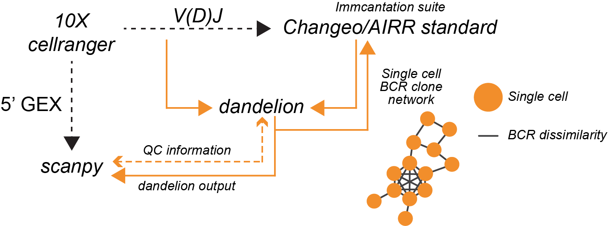

Version = 0.0.26
Hi there! I have put together a python package for analyzing single cell BCR/V(D)J data from 10x Genomics 5’ solution! It streamlines the pre-processing, leveraging some tools from immcantation suite, and integrates with scanpy/anndata for single-cell BCR analysis. It also includes a couple of functions for visualization.
Overview¶

Illustration of the Dandelion class slots

Please refer to the documentation or the notebooks here:
The raw files for the examples can be downloaded from 10X’s Single Cell Immune Profiling datasets website.
Installation¶
I would reccomend installing this in order:
# in bash/zsh terminal
# create a conda environment with specific modules
conda create --name dandelion python=3.7
conda activate dandelion
First, install scanpy.
# these are required by dandelion
conda install -c conda-forge distance joblib plotnine adjustText
conda install -c bioconda igblast blast # if this doesn't work, download them manually (see below)
conda install -c conda-forge "rpy2>=3.3.2,<3.3.5" # to make compatible for R version 4
# or pip install "rpy2>=3.3.2,<3.3.5"
# If it fails because it's compiling using clang, first, work out where the path is to your gcc compiler (use brew to install gcc if needed):
# then run
# env CC=/path/to/location/of/bin/gcc-9 pip install "rpy2>=3.3.2,<3.3.5"
# Use pip to install the following with --no-cache-dir --upgrade if necessary
# and then lastly install this
pip install sc-dandelion
# or
pip install git+https://github.com/zktuong/dandelion.git
# for the development branch, run this:
pip install git+https://github.com/zktuong/dandelion.git@devel
dandelion also requires some R packages intalled.
# in R
install.packages(c("optparse", "alakazam", "tigger", "airr", "shazam"))
or the following if using conda to manage R:
# in bash/zsh terminal
conda install -c conda-forge r-optparse r-alakazam r-tigger r-airr r-shazam
The package should now be properly installed and when starting up jupyter notebook in the virtual environment, the kernel python3 should work. Otherwise, you might need to add it manually:
# in bash/zsh terminal
python -m ipykernel install --user --name dandelion --display-name "Python (dandelion)"
Required database¶
Last but not least, you will need to download the database folder in this repository and place them somewhere accessible. The igblast and germline database folders were originally downloaded with immcantation’s docker image (4.1.0). The blast database were downloaded from IMGT and manually curated. I have uploaded a copy of the required databases in a separate repository(Last update: 28/11/2020). Once you’ve unpacked the folders, export the the path to the database folders as environmental variables in your ~/.bash_profile or ~/.zshenv like below. This will allow dandelion to access them easily. In the future, the databases will have to be updated accordingly.
So for example, if I unpack into ~/Documents
# in bash/zsh terminal
# set up environmental variables in ~/.bash_profile
echo 'export GERMLINE=~/Documents/dandelion/database/germlines/' >> ~/.bash_profile # or ~/.zshenv
echo 'export IGDATA=~/Documents/dandelion/database/igblast/' >> ~/.bash_profile # or ~/.zshenv
echo 'export BLASTDB=~/Documents/dandelion/database/blast/' >> ~/.bash_profile # or ~/.zshenv
source ~/.bash_profile # or ~/.zshenv
External softwares¶
While blast and igblast executables are managed through conda, you can also download igblast and blast+ manually, and store the softwares somewhere accessible. Just make sure to set the paths to them appropriately.
# in bash/zsh terminal
# unpack where relevant and export the path to the softwares, e.g. ~/Documents/
echo 'export PATH=~/Documents/software/bin:$PATH' >> ~/.bash_profile # or ~/.zshenv
source ~/.bash_profile # or ~/.zshenv
Basic requirements¶
Python packages
# conda
python>=3.7,<3.8 (conda-forge)
numpy>=1.18.4 (conda-forge)
pandas>=1.0.3 (conda-forge)
distance>=0.1.3 (conda-forge)
joblib==0.14.1 (conda-forge)
jupyter==1.0.0 (conda-forge)
scikit-learn>=0.23.0 (conda-forge)
numba>=0.48.0 (conda-forge)
pytables==3.6.1 (conda-forge)
seaborn>=0.10.1 (conda-forge)
leidenalg>=0.8.0 (conda-forge)
plotnine>=0.6.0 (conda-forge)
# Other executables (through conda)
blast>=2.10.0 (bioconda) # depends on the database version as well
igblast==1.15.0 (bioconda)
# pip
anndata>=0.7.1
scanpy>=1.4.6
scrublet>=0.2.1
scikit-bio>=0.5.6
changeo>=1.0.0
presto>=0.6.0
polyleven>=0.5
networkx>=2.4
rpy2>=3.3.2,<3.3.5
R packages
alakazam_1.0.1
tigger_1.0.0
airr_1.2.0
shazam_1.0.0
ggplot2
Acknowledgements¶
I would like to acknowledge the contributions from Dr. Ondrej Suschanek, Dr. Benjamin Stewart, Dr. Rachel Bashford-Rogers and Prof. Menna Clatworthy, who helped with the initial conception of the project and for all discussions.
I would also like to acknowledge Dr. Jongeun Park, Dr. Cecilia-Dominguez Conde, Dr. Hamish King, Dr. Krysztof Polanksi and Dr. Peng He with whom I have had very useful discussions. I would also like to thank my wife who helped name the package, because she thought the plots looked like a dandelion =D.
If there are any ideas, comments, suggestions, thing you would like to know more etc., please feel free to email me at kt16@sanger.ac.uk or post in the issue tracker and I will get back to you.